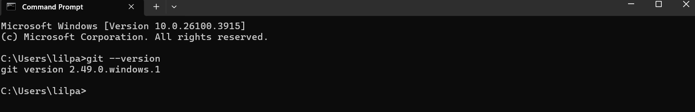
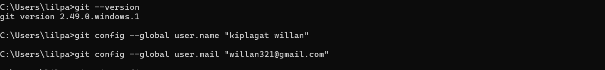
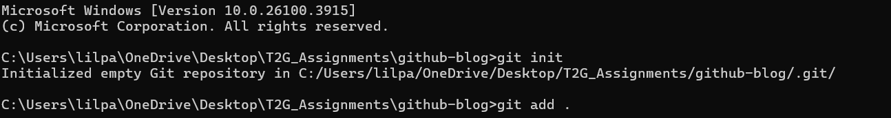
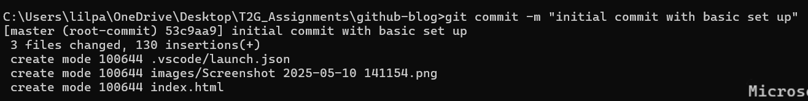
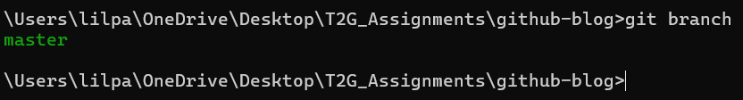
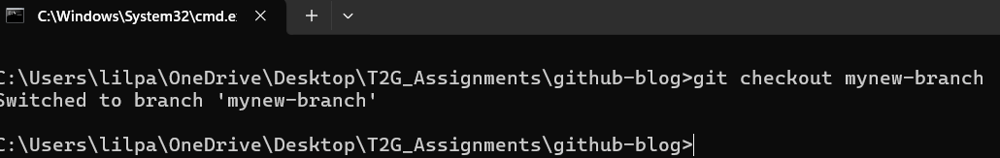
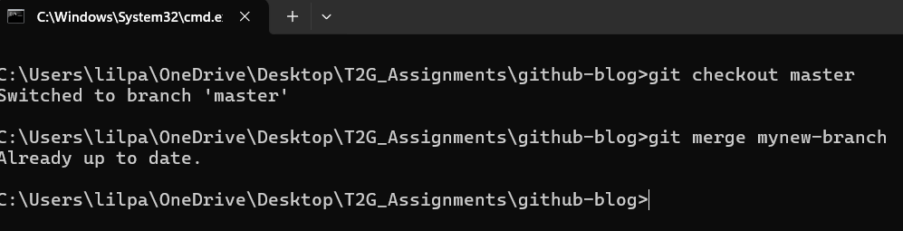
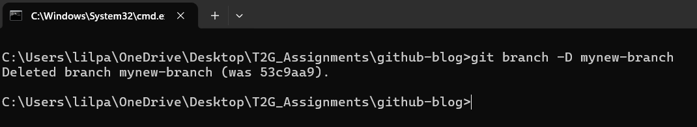

Git is a distributed version control system designed to help developers track changes in their code, collaborate with others, and manage their project history efficiently. A version control system (VCS) allows you to save snapshots of your code over time, revert to previous versions, and work simultaneously on features without conflict.
Other version control systems include SVN (Subversion), Mercurial, and Perforce. However, Git has become the industry standard due to its speed, flexibility, and integration with platforms like GitHub. In this blog, we'll focus on using Git and GitHub.
To check if Git is already installed on your computer, open a terminal or command prompt and run:
git --versionScreenshot: A terminal showing the installed Git version.

If Git is not installed, you can download it from the official website: git-scm.com. Choose the version for your operating system and follow the setup instructions.
After installing Git, configure your name and email so your commits are properly tagged:
git config --global user.name "Willan Kiplagat"
git config --global user.email "willankpl01@gmail.com"

Screenshot: Commands being entered in the terminal with your name and email.
A Git repository is a storage space for your project and its history. To initialize a Git repository, navigate to your project folder and run:
git initScreenshot: Git initializing in a folder.

A commit saves the current state of your files. First, stage your changes:
git add .
Then commit them with a meaningful message:
git commit -m "Initial commit with basic setup"Use clear, descriptive commit messages. To view past commits:

git logTo revert to a previous commit:

git checkout [commit-id]Screenshot: Git log and checkout commands in action.

A branch lets you work on new features or experiments without affecting the main codebase. It’s a safe space to make changes. Once done, you can merge it back.
View all branches with:
git branch
Create a new branch with:
git branch feature-loginScreenshot: Output showing current and new branches.

To switch to another branch:
git checkout feature-login
Screenshot: Switched from main to feature-login.
After completing work on a feature branch, merge it into the main branch:
git checkout main
git merge feature-login

Screenshot: Merge output showing success.
Once a branch is merged and no longer needed, delete it:
git branch -d feature-login
Screenshot: Confirmation that the branch was deleted.
Congratulations! You've learned the basics of Git. As your next steps, explore how to:
git remotegit push and git pull.gitignore filesContinue your journey with GitHub and explore other tools like GitLab or Bitbucket as you grow more confident in version control!